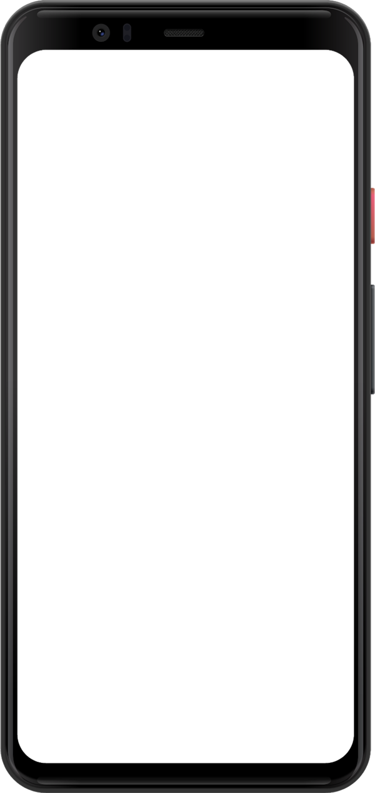

Sodar
Use AR to visualise social
distancing guidelines around you.
play_arrow
Sodar is only available on devices with Camera and Motion Sensors
Scan the QR code with your phone camera to open it there.
Sodar
Use AR to visualise social
distancing guidelines around you.
LAUNCH
arrow_back
Select Camera
camera_alt
more_vert
More Options
close
tune
Field of View
70
share
Share
feedback
Feedback